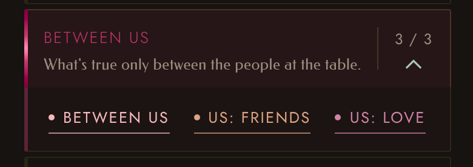
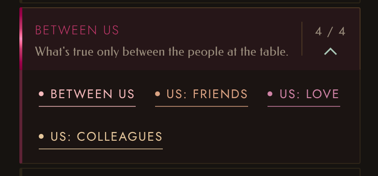
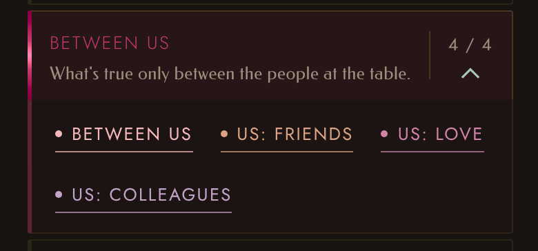
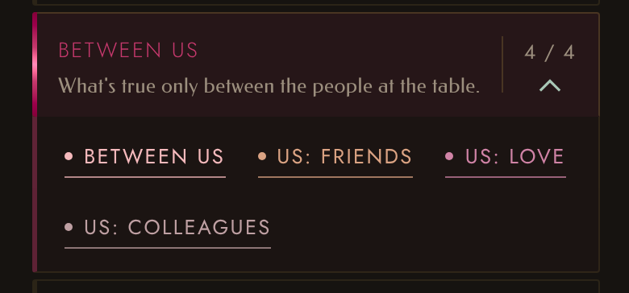

Us: Colleagues · colour
The real app on a phone, The Deck open on the Between Us chapter. First as it is now, then with Us: Colleagues added in three colours from the Us family.




The real app on a phone, The Deck open on the Between Us chapter. First as it is now, then with Us: Colleagues added in three colours from the Us family.



